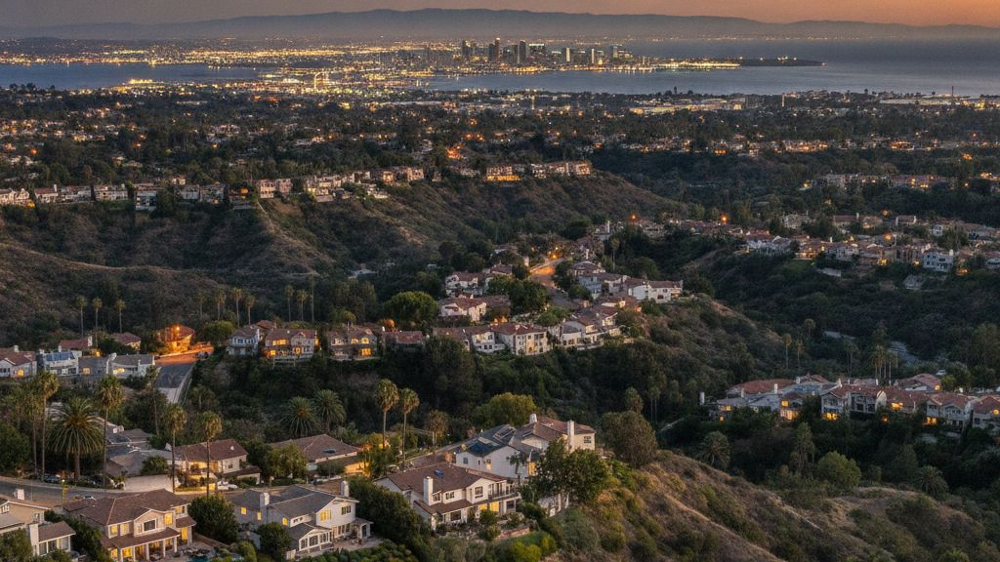

The Paradise Hills Housing Market
Houses are largely single-story ranch-style homes dating mainly to the postwar decades, along with some two-story infill and scattered townhomes. Lots are typically of moderate size, and some hillside streets have larger sites. Garages are sometimes converted, and rear-yard additions are not unusual. HOAs are limited to a few condo and townhome projects. Pricing generally sits in the lower portion of the county range.

What Shapes Value in Paradise Hills
Elevation changes produce view differences from street to street, and some parcels have slope or drainage concerns. Permit status of additions and garage conversions comes up often. Accessory dwelling units are an increasingly common factor on larger lots.
Local Landmarks and Amenities
Paradise Hills Community Park, Paradise Valley Road, the Paradise Hills Library and nearby Sweetwater Valley open space.
Can an appraiser count a converted garage in a Paradise Hills home's living area?
Only when the conversion is legal and meets the standards for finished living space, such as proper permits, heating and ceiling height. Otherwise it is usually reported separately and valued at a lesser contribution, with the reasoning noted in the report.